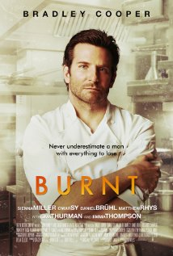

|  |
Burnt-Comedy |
comedy |
Adam Jones (Bradley Cooper) is a chef who destroyed his career with drugs and diva behavior. He cleans up and returns to London, determined to redeem himself by spearheading a top restaurant that can gain three Michelin stars. |
|
The Man from U.N.C.L.E. |
comedy |
In the early 1960s, CIA agent Napoleon Solo and KGB operative Illya Kuryakin participate in a joint mission against a mysterious criminal organization, which is working to proliferate nuclear weapons. |
 |
Spectre |
comedy |
A cryptic message from Bond's past sends him on a trail to uncover a sinister organization. While M battles political forces to keep the secret service alive, Bond peels back the layers of deceit to reveal the terrible truth behind SPECTRE. |